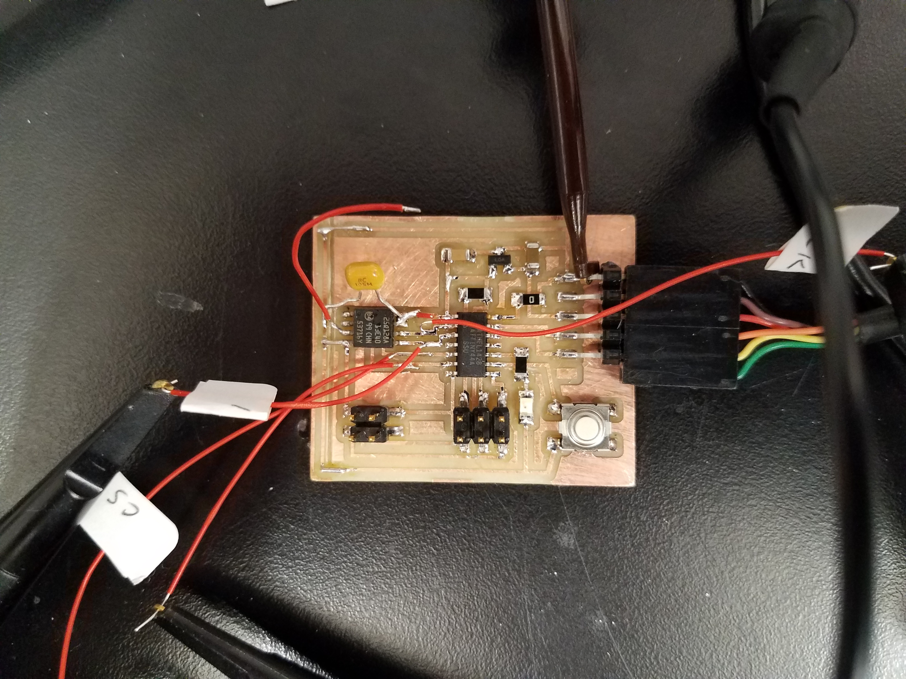
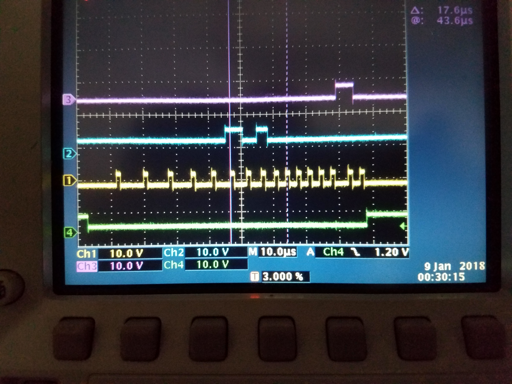
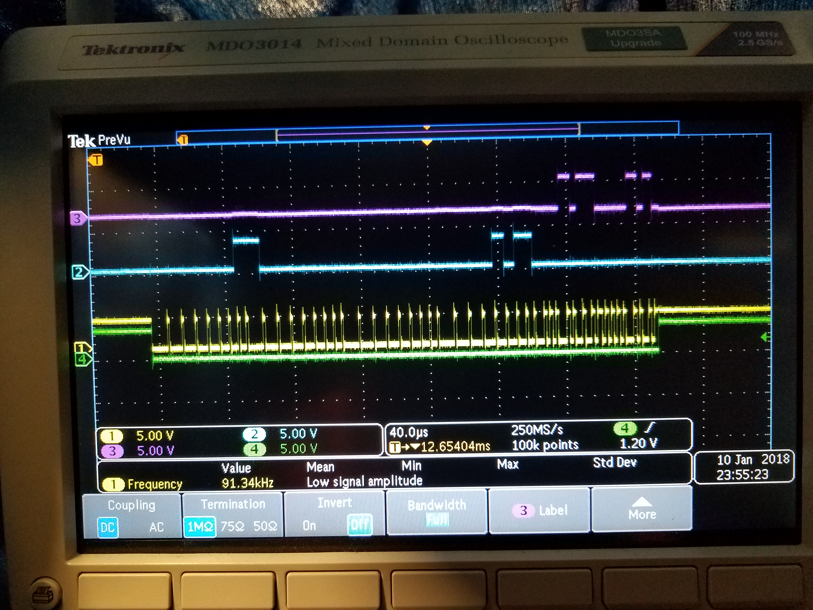
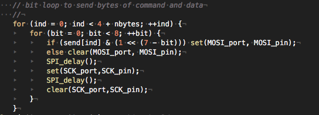
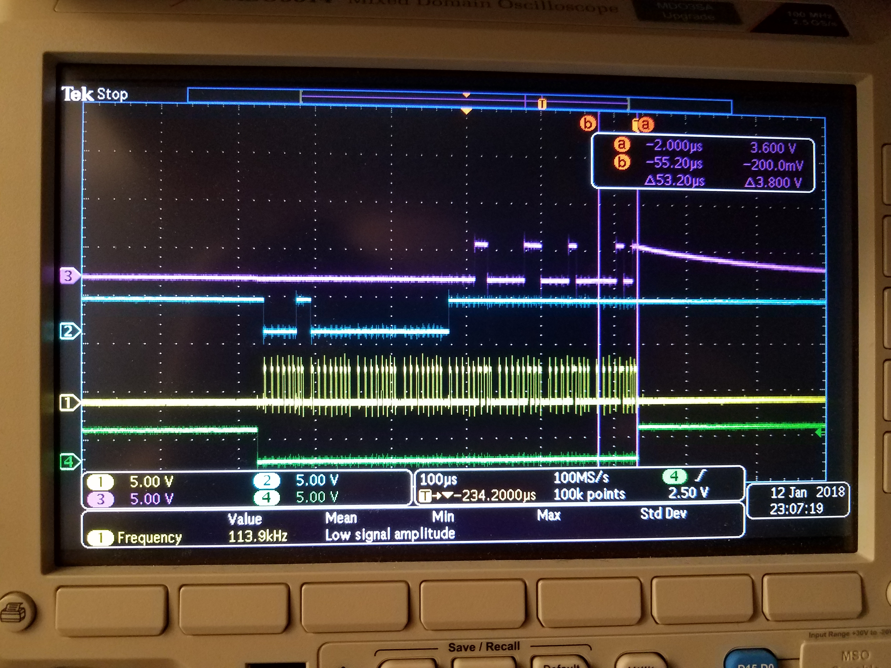
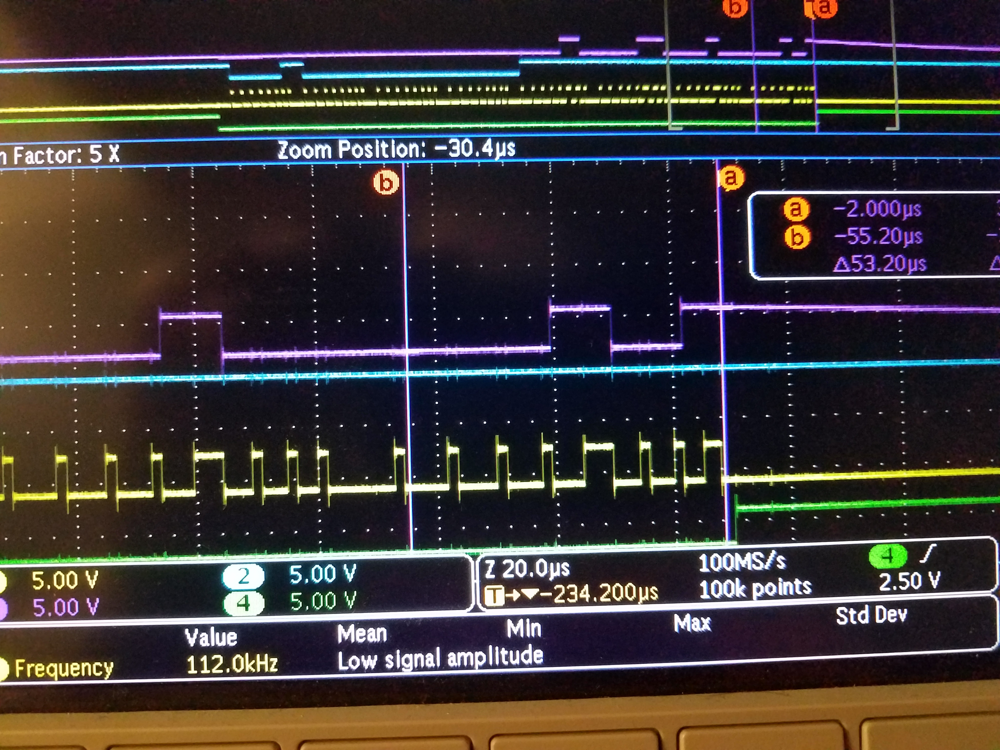
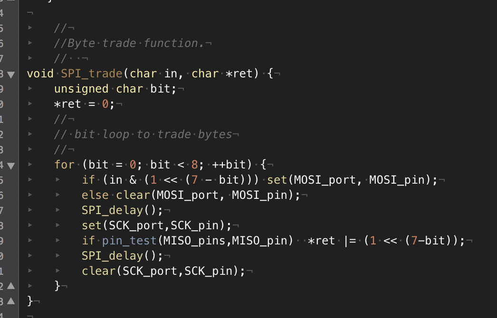
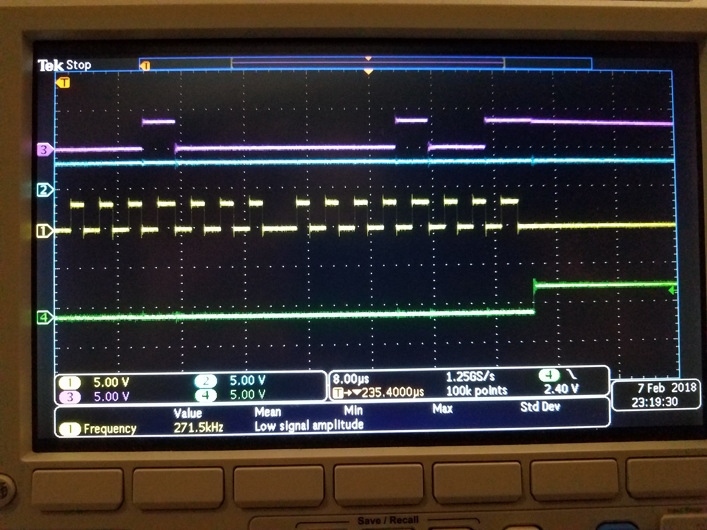

- button (this one well commented for instructional purposes)
- first program


On scope trace, green=CS, yellow=CK, Blue=MOSI, purple=MISO. Necessary to pull /RESET pin high in order for it to work.
Not necessary to pull /WP pin high, but it may not be a bad idea on the next board design to do so.
This program sends write enable command, then reads status register 1. Return is 0x02 - only the write enable bit is high. Note one too many falling edges on scope trace
Note that it takes ~7 microseconds between clk clear and set, while if statement is being evaluated. Surprising
to me that it takes so long. Why? Better in assembly? Quicker to use USI?
- second program.In read loop, ends with CK set. Add scope picture. Can now loop to get more bytes.
- Next, generalize the function to allow reading and writing data.
- third program with functions that write and read one byte in one memory location.
- do proper passing of variables and pointers to functions
- fourth program passes address, commands, and data. Next
use a data buffer of variable length.
- Neil's echo program. gives a lesson on passing pointers to functions.
- void put_char(volatile unsigned char *port, unsigned char pin, char txchar). Called by : put_char(port, pin, str[index]);
In this function txchar is a value, *port is used as *port
- void put_string(volatile unsigned char *port, unsigned char pin, char *str) Called by:put_string(&serial_port, serial_pin_out, buffer); where buffer is a pointer to an array.
in the function the variable str is used as an array "str[index]" The variable port is used as "port"
- 5th program, flash_spi_05.c Passes addresses, read-byte-array, write-byte array pointers
and number of bytes to read or write. prints out two elements of read-array. Uses one function to read and one
to write commands and addresses. Incorporate "read status" function into the read function? Actuall, it's time to think about
function structure. Maybe write a function to trade bytes that is called as needed by other functions.

Scope picture shows command on MOSI (Blue) to read, followed by three-byte address. Two bytes
are read (purple) on MISO. Time to write a byte: 50 usec. Time to read byte: 34 usec, depending on bit value. Why so long??

Here's the fragment of the program. The time between clearing SCK and setting it in the top
of the loop is 4-9 microseconds at a clock speed of 8MHz. Why?
- I've learned so far:
- Chip needs to have /RESET high.
- Write on rising edge of clock. Read on falling edge.
- locations must be erased in order to be written. No overwriting. Writing takes ~50 usec per byte. (with overhead).
- With this c-program, read time ~33 usec per byte (with overhead).
- Next things
- Write a program to read sound and replay. Just fast enough.
- Find out why it takes so long in conditional statements. Try assembly function.
- Modularize the functional structure. Byte-trading.
- Implementing USI on t44 in assembly or c.
- B01 program, flash_spi_B01.c This program uses a function
to trade bytes with chip. This will be slower, because I'm sending and receiving each time around. It will be modular, and
next step can be either to use USI for faster trades, or speed up the loop using assembly tools. B01 uses a byte_trade function
and unrolls the commands
- Write enable bit seems to be cleared by writing and erasing, but not by reading.
- B02 program, flash_spi_B01.c Now move unrolled loops into functions. This iteration has a function
to write enable, read status from address. Next step is to pass an address array and then read/write n bytes.
- B03 program, flash_spi_B01.c Now send array for address to read function.
- B04 program, flash_spi_B04.c This program receives bytes into an array in read function.
- B05 program, flash_spi_B05.c added nbytes and loop to read nbytes of data.
- B06 program, flash_spi_B06.c Added write function to accept array pointers
for address and data, and nbytes. Put sector_erase into function. Nice point to stop and clean up and measure timing.

Reading four bytes, which takes four bytes sent and four received, takes 500 microseconds. Zooming in, see that reading
a byte takes 53 microseconds.
 The function that trades bits. Takes ~8 microseconds per bit.
- B07 program, flash_spi_B07.c This program unrolls the bit-trading loop, eliminating a for loop. Scope image show that the whole four-byte read takes about half the time,
around 260 microseconds. Each bit now takes ~4microseconds, with time for CK high 1.7-2.2 microseconds. Cuts the total time in half by reducing the time that
ck is low. Next, remove the 1 microsecond bit delays to speed up more.

- B08 program, flash_spi_B08.c This program has
delays removed.
{kind=link}
{kind=link}